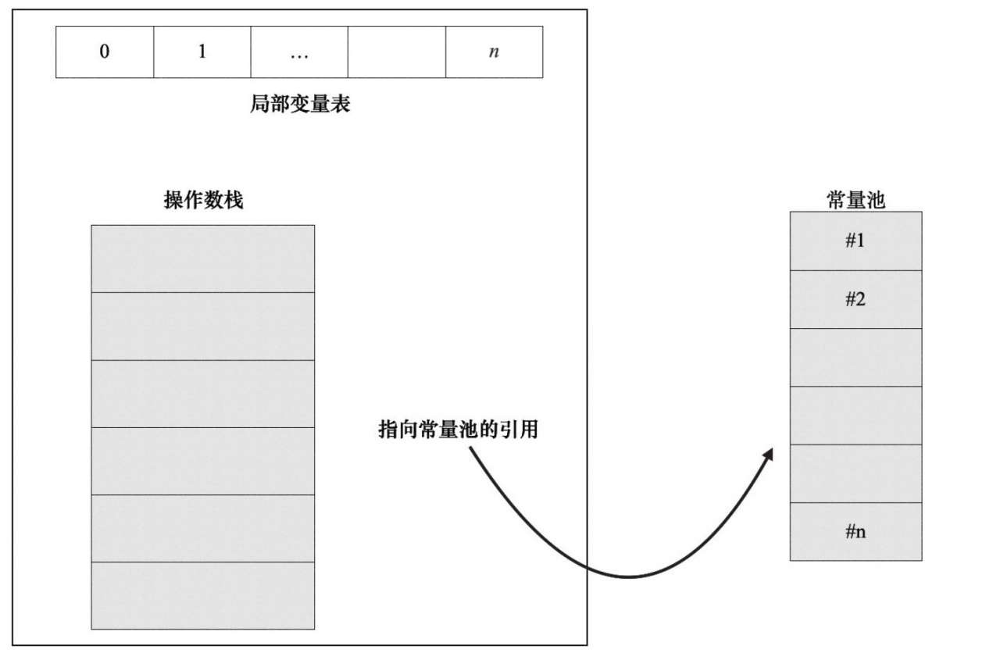

字节码是运行在JVM上的，为了能弄懂字节码，需要对JVM的运行原理有所了解。
虚拟机常见的实现方式有两种：基于栈（Stack based）和基于寄存器（Registerbased）。典型的基于栈的虚拟机有Hotspot JVM、.net CLR，而典型的基于寄存器的虚拟机有Lua语言虚拟机LuaVM和Google开发的Android虚拟机DalvikVM。
两者有什么不同呢？举一个计算两数相加的例子：c = a + b, Java源码如下所示。
int my_add(int a, int b) {
return a + b;
}
使用javap查看对应的字节，如下所示。
0: iload_1 // 将a压入操作数栈
1: iload_2 // 将b压入操作数栈
2: iadd // 将栈顶两个值出栈相加，然后将结果放回栈顶
3: ireturn // 将栈顶值返回
实现相同功能对应的lua代码如下。
local function my_add(a, b)
return a + b;
end
使用luac -l -l -v -s test.lua命令查看lua的字节码，如下所示。
[1] ADD R2 R0 R1 ; R2 := R0 + R1
[2] RETURN R2 2 ; return R2
[3] RETURN R0 1 ; return
第1行调用ADD指令将R0寄存器和R1寄存器中的值相加存储到寄存器R2中。第2行返回R2寄存器的值。第3行是lua的一个特殊处理，为了防止有分支漏掉了return语句，lua始终在最后插入一行return语句。
以7 + 20为例，基于栈和基于寄存器的执行过程对比如图2-1所示。

基于栈和基于寄存器的指令集架构各有优缺点，具体如下所示。
- 基于栈的指令集架构的优点是移植性更好、指令更短、实现简单，但是不能随机访问堆栈中的元素，完成相同功能所需的指令数一般比寄存器架构多，需要频繁地入栈出栈，不利于代码优化。
- 基于寄存器的指令集架构的优点是速度快，可以充分利用寄存器，有利于程序做运行速度优化，但操作数需要显式指定，指令较长。
栈帧
在写递归的程序时如果忘记写递归退出的条件，则会报java.lang.StackOverflowError异常。比如计算斐波拉契数列，它的计算公式为f（n）= f（n-1）+ f（n-2），假设从0开始，它的序列如下所示。
0, 1, 1, 2, 3, 5, 8, 13, 21, ...
在没有递归退出条件的情况下，很容易写出下面的代码。
public static int fibonacci(int n) {
return fibonacci(n -1) + fibonacci(n -2);
}
运行上面的代码马上会报java.lang.StackOverflowError异常。为什么会抛这个异常呢？这就要从栈帧（Stack Frame）讲起。
Hotspot JVM是一个基于栈的虚拟机，每个线程都有一个虚拟机栈用来存储栈帧，每次方法调用都伴随着栈帧的创建、销毁。Java虚拟机栈的释义如图2-2所示。

当线程请求分配的栈容量超过Java虚拟机栈允许的最大容量时，Java虚拟机将会抛出StackOverflowError异常，可以用JVM命令行参数 -Xss来指定线程栈的大小，比如 -Xss:256k用于将栈的大小设置为256KB。
每个线程都拥有自己的Java虚拟机栈，一个多线程的应用会拥有多个Java虚拟机栈，每个栈拥有自己的栈帧，如图2-3所示。

栈帧是用于支持虚拟机进行方法调用和方法执行的数据结构，随着方法调用而创建，随着方法结束而销毁。栈帧的存储空间分配在Java虚拟机栈中，每个栈帧拥有自己的局部变量表（Local Variable）、操作数栈（Operand Stack）和指向常量池的引用，如图2-4所示。
栈帧是用于支持虚拟机进行方法调用和方法执行的数据结构，随着方法调用而创建，随着方法结束而销毁。栈帧的存储空间分配在Java虚拟机栈中，每个栈帧拥有自己的局部变量表（Local Variable）、操作数栈（Operand Stack）和指向常量池的引用，如图2-4所示。

局部变量表
每个栈帧内部都包含一组称为局部变量表的变量列表，局部变量表的大小在编译期间就已经确定，对应class文件中方法Code属性的max_locals字段，Java虚拟机会根据max_locals字段来分配方法执行过程中需要分配的最大的局部变量表容量。代码示例如下。
public class MyJVMTest {
public void foo(int id, String name) {
String tmp = "A";
}
}
使用javac -g MyJVMTest.java进行编译，然后执行javap -c -v -l MyJVMTest查看字节码，结果如下。
public void foo(int, java.lang.String);
Code:
stack=1, locals=4, args_size=3
0: ldc #2 // String A
2: astore_3
3: return
LocalVariableTable:
Start Length Slot Name Signature
0 4 0 this LMyJVMTest;
0 4 1 id I
0 4 2 name Ljava/lang/String;
3 1 3 tmp Ljava/lang/String;
可以看到foo方法只有两个参数，args_size却等于3。当一个实例方法（非静态方法）被调用时，第0个局部变量是调用这个实例方法的对象的引用，也就是我们所说的this。调用方法foo（2019, "hello"）实际上是调用foo（this, 2019,"hello"）。LocalVariableTable输出显示了局部变量表的4个槽（slot），布局如表2-1所示。

javap输出中的locals=4表示局部变量表的大小等于4。局部变量表的大小并不是方法中所有局部变量的数量之和，它与变量的类型和变量作用域有关。当一个局部作用域结束，它内部的局部变量占用的位置就可以被接下来的局部变量复用了，以下面的静态foo方法为例。
public static void foo() {
// locals=0, max_locals=0
if (true) {
// locals=1, max_locals=1
String a = "a";
}
// locals=0, max_locals=1
if (true) {
// locals=1, max_locals=1
String b = "b";
}
// locals=0, max_locals=1
}
foo方法对应的局部变量表的大小等于1，因为是静态方法，局部变量表不用自动添加this为局部变量表的第一个元素，a和b共用同一个slot等于0的局部变量表位置。当包含long和double类型的变量时，这些变量会占用两个局部变量表的slot，以下面的代码为例
public void foo() {
double a = 1L;
int b = 10;
}
对应的局部变量表如图2-5所示。

操作数栈
每个栈帧内部都包含一个称为操作数栈的后进先出（LIFO）栈，栈的大小同样也是在编译期间确定。Java虚拟机提供的很多字节码指令用于从局部变量表或者对象实例的字段中复制常量或者变量到操作数栈，也有一些指令用于从操作数栈取走数据、操作数据和把操作结果重新入栈。在方法调用时，操作数栈也用于准备调用方法的参数和接收方法返回的结果。
比如iadd指令用于将两个int型的数值相加，它要求执行之前操作数栈已经存在两个int型数值，在iadd指令执行时，两个int型数值从操作数栈中出栈，相加求和，然后将求和的结果重新入栈。1 + 2对应的指令执行过程，如图2-6所示。

整个JVM指令执行的过程就是局部变量表与操作数栈之间不断加载、存储的过程，如图2-7所示。

那么，如何计算操作数栈的最大值？操作数栈容量最大值对应方法Code属性的max_stack，表示当前方法的操作数栈在执行过程中任何时间点的最大深度。调用一个成员方法会将this和所有参数入栈，调用完毕this和参数都会出栈。如果方法有返回值，会将返回值入栈。代码示例如下。
public void foo() {
bar(1, 1, 2);
}
public void bar(int a, int b, int c) {
}
foo方法的max_stack等于4，因为调用bar方法会将this、1、1、2这四个变量压栈到栈上，栈的深度为4，调用完后全部出栈。
如果bar方法后面再调用一个参数个数小于3的方法，比如下面代码中的bar1, foo方法的max_stack还是等于4，因为方法调用过程中，操作数栈的最大深度还是调用bar方法产生的。
public void foo() {
// stack=4, max_stack=4
bar(1, 1, 2);
// stack=2, max_stack=4
bar1(1);
}
public void bar(int a, int b, int c) {
}
public void bar1(int a) {
}
如果bar方法后面再调用一个参数个数大于3的方法，比如下面代码中的bar2，会将this、1、2、3、4、5入栈，max_stack变为6。
public void foo() {
// stack=4, max_stack=4
bar(1, 1, 2);
// stack=2, max_stack=4
bar1(1);
// stack=6, max_stack=6
bar2(1, 2, 3, 4, 5);
}
public void bar(int a, int b, int c) {
}
public void bar1(int a) {
}
public void bar2(int a, int b, int c , int d, int e) {
}
计算stack的方式如下：遇到入栈的字节码指令，stack+=1或者stack+=2（根据不同的指令类型），遇到出栈的字节码指令，stack则相应减少，这个过程中stack的最大值就是max_stack，也就是javap输出的stack的值，计算过程的伪代码如下所示。
push(Type t) {
stack = stack + width(t);
if (stack > max_stack) max_stack = stack;
}
pop(Type t) {
stack = stack - width(t);
}